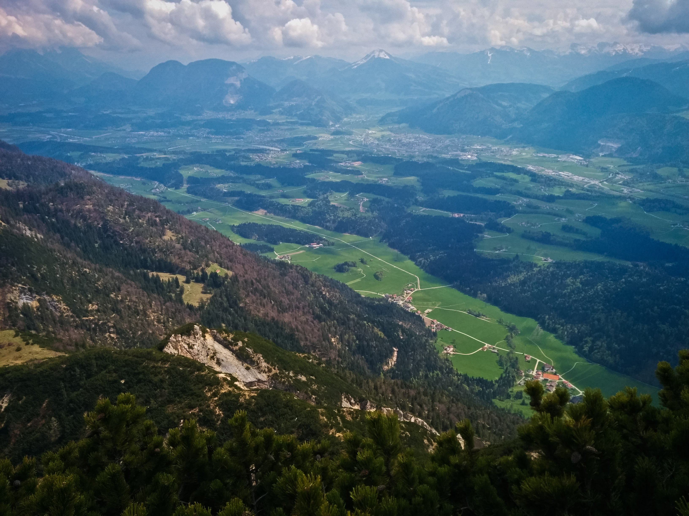
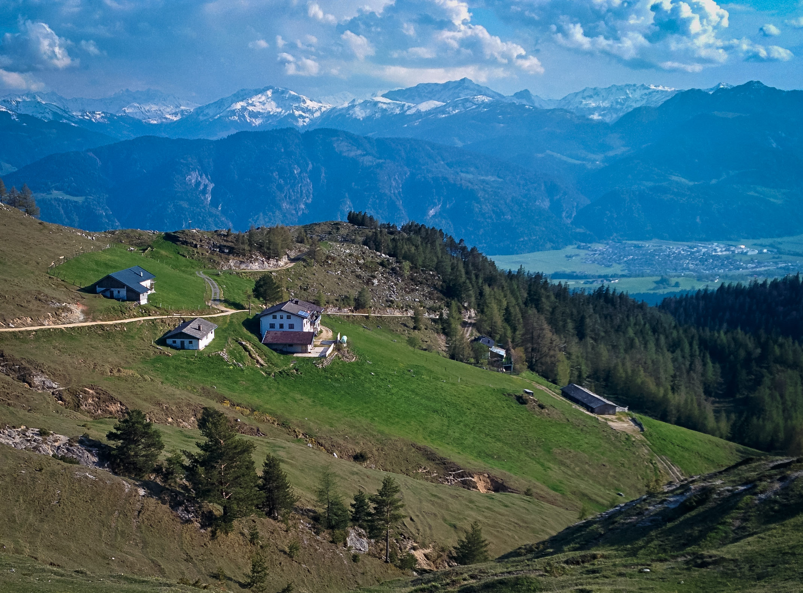
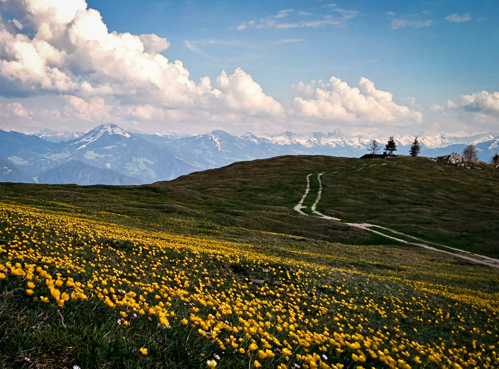
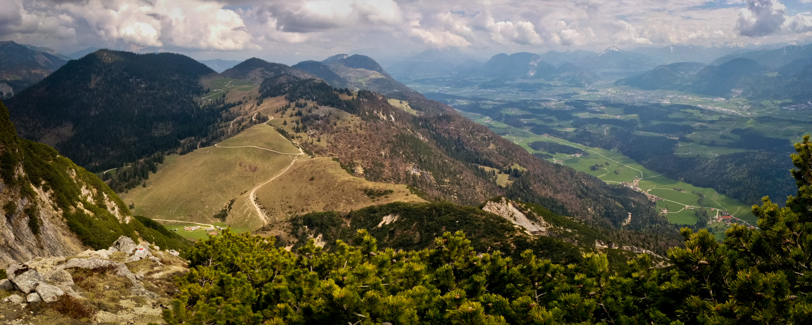
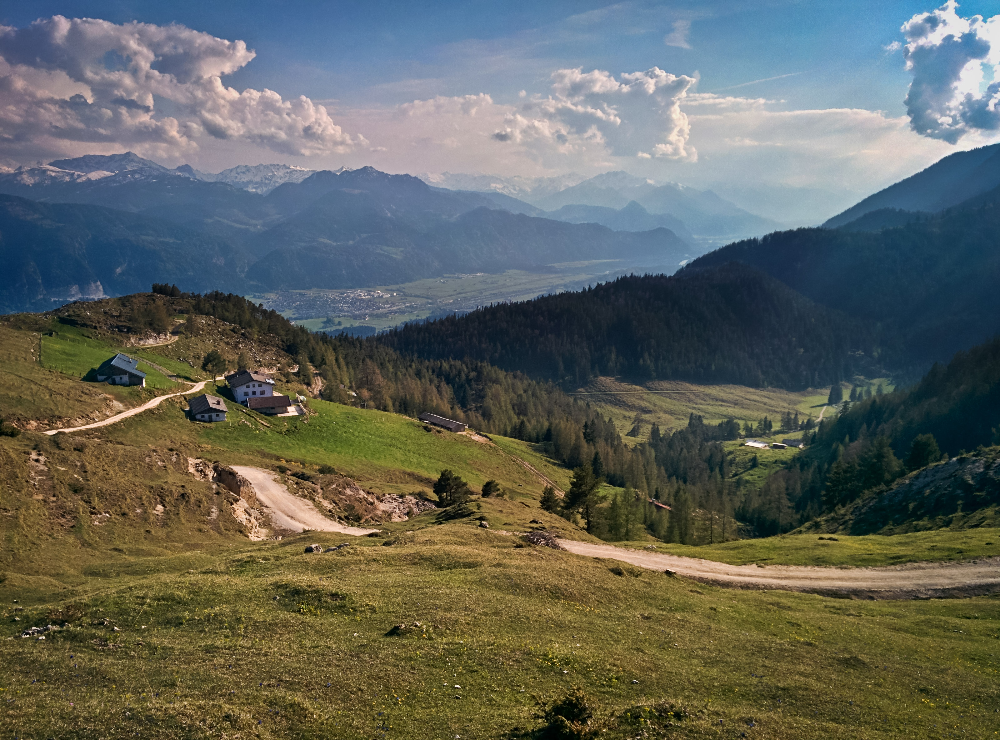

Short Reports 2014
Hoher Fricken
December 28, 2014
Nice snowshoe hike up the Kühflucht. Near the top, I met another party and I helped them out by making tracks with snowshoes. They had plans to go down another way to the south, and I was game to try that too. I went off ahead because I was cold. I heard them behind me, but after a time, their voices receded. I went through quite deep snow, and I wonder if they turned around? Plus, it was snowing steadily. I emerged on a road with a fine sledding track which provoked feelings of envy. 1300 meters up and down.
Wendelstein and Breitenstein
December 14, 2014
Enjoyable hike up Wendelstein from Bayrischzell, first tagging Breitenstein. It was a total of 1700 meters up and down. Lots of snow to deal with on the ridge over to Breitenstein.
Wendelstein
December, 2014
I was curious to see what it was like to hike up Wendelstein from Bayrischzell, and I found a really enjoyable trail.
Wendelstein with boys
November, 2014 The boys and I hiked up the Wendelstein from Sudelfeld, tagging the Lacherspitze along the way. We had to climb through snow near the summit. We took a different way down, making for a nice loop.
Buchstein
September 4, 2014
After work, I hiked up the Buchstein, intending to eat dinner there. But something went wrong somehow. I asked the hut warden if I could order dinner and he just ignored me. It was strange. I waited a few minutes, then left to scramble up the peak. Oh well. Sometimes interactions with people are strange. Anyway it was a great hike…weather was cloudy but I had fairly broad views. Some skimming clouds wisping around me on the scrambling sections, and a couple kids playing at the Tegernseer Hütte.
Habicht
July 13, 2014
A day trip from the car by the normal route. A week of bad weather left the mountain very snowy. It took me a bit over 4 hours to go up and down from the Innsbrucker Hut. The fresh snow and occasional showers of rain and snow made the going slow and a bit tricky. Impressive mountain, I’d like to come back for more routes.
I have some pictures here
Flintsbach
June 3, 2014
- Nur Fliegen ist schoener (7-), extended the climb into an anchor above, right at 30 minutes of climbing. It might have been into Normalweg (5+) or McFisto (6+/7-).
- Felsrowdy (6+/7-) - first pitch fairly easy (5).
- Felsrowdy P2 (6+/7-) - Hannes led this fine slabby pitch. Then we dropped down the other side to climb in the rain.
- Steinlaus (6-)
- Fliegenschiss (6-) - with correct exit, right and up, rather than left.
- Miles Davis (6-) - I had failed to understand the step between clips 2 and 3 before.
- Knabenkraut (6+) - quite wet. Several times, downclimb and rest at the crux move. Finally I found a sequence that worked for me:
- left hand in pocket, right on chalky hold, stand up
- right hand on lower half of high lieback hold. Bring left foot up to ledge and stand up.
- right hand adjusts to upper half of high lieback hold
- right foot inserts into chalky pocket, left foot goes far left onto slab, finds high good foothold on far left.
- left hand reaches up for small ledge in right side of dihedral at head-height.
- right foot now comes up to chalked crest hold.
- adjustments of hands, left hand goes in pocket below bolt, right hand goes where left was.
- continued adjustments allow clipping, and then finishing route. Just to note, Hannes found a hold below the “pocket below bolt” in the crack that might make things a lot easier.
- 99 Karat (7+) - led with one fall, several rests
- 99 Karat (7+) - again, on top rope, no falls or rests
Flintsbach
May 20, 2014
Great evening climbing session with Hannes. We quickly dispatched Fliegenschiss (6-) and Steinlaus (6-), then an easier route to the right, I think grade 5. Then we got on the 8- “sehr stickiges stehproblem,” which Hannes did an amazing job on. We climbed the easy pitch above with the 5+ chimney/crack. Then we climbed the route on the right side of the crag, P1 only, grade 7-. Wonderful. We repeated it on TR.
Finally, as it got dark we climbed a 5+ route back right of Fruechte der Saison.
Wallberg
May 18, 2014
I hiked up for exercise with a 30 pound pack, content with making the lift station instead of the true summit, so the gain was only 820 meters. Reasonably fun despite the pack full of water and rocks! Again, plenty of fresh snow. Will summer ever come?
Kopfkraxen
May 4, 2014
I went for hike in my new climbing boots, to continue breaking them in and maybe, if I was lucky, get to do a bit of rock climbing or scrambling. Unfortunately, the weather took a turn for the worse, and I was alarmed to see fresh snow down to a low level on the drive into the Wilder Kaiser. I parked at the Jaegerwirt above Scheffau, and hiked up past the waterfall into the Schneekar, now in deep but consolidated snow. A bit of misting rain turned to snowflakes on the way up. I decided to climb the West Ridge (III) of Sonneck, a summit I’d never visited. However I was turned around at about 2050 meters by insecure icy rocks in a steep gully. So I descended back to the waterfall at about 1550 meters, and then dutifully up the snowy trail to the summit of the Kopfkraxen at about 2130 meters. By now it was pretty late (I think I started hiking at 2 pm), so I regretfully decided not to continue on to the summit of Sonneck, which would have required a snowy descent. I went down a different way into the Kaiser Hochalm valley, then rather inefficiently along a grassy spur above the Jaegerwirt, at some points leaving the road or trail and following my nose in the gloaming. I think it was about 1700 meters up and down. Here is a video:
Plessenberg and Buchacker Alm
April 26, 2014
Whew, more exploration of the Brandenberger Alpen! I was back on the trail to the Ascherjöchl, and this time I continued up to the Plessenberg summit. In answer to a small prayer, the cloud obscuring the summit all the way up disappeared as I approached. Yes! So I could see the Inntal and all around. I tagged the Heuberg summit too, just for fun. Looks like this was about 1400 meters up and down.
Back down to the car, then I drove to a shady meadow to make some delicious salami, Kaiser Max cheese and Dijon mustard sandwiches. After about an hour of taking it easy, I was ready for the second hike.
Clocking in at about 890 meters up and down, I followed a road from Embach up to the Buchacker Alm, making my high point a little hillock shortly after the division of the Hundesalm and Buchacker Alm roads divide (also marked by a bench on a small hill). That bench was occupied by a cheerful biker, so I continued a bit further hoping for expansive views to the north (partially successful). This is a very beautiful high Alm which has a very “in the sky” feeling because it’s not dominated by still-higher looming peaks. I think the road walk is a bit unfortunate, but at least it’s very steep. On the way down I took some trail short-cuts, but my god, they were nearly vertical tree-roots at times.
So, grand total of 890 + 1400 = 2290 meters, or 7513 feet, whew! What a nice day.
    
{kind=link}
{kind=link}
{kind=link}
{kind=link}
{kind=link}
Voldöpper Spitze and Ascherjöchl
April 13, 2014
I wanted some snow-free hiking, but I didn’t know how high I’d be able to get before the snow got deep. Also it was going to rain. I decided to do two 1000 meter hikes in order to get plenty of exercise. I chose the Voldöpper Spitze above Kramsach, parking near a campground, and just hiking up and down without even a pack or water, just an iPod. Mostly it didn’t rain, and the summit was nice, popping steeply out of the trees for decent local views. I returned the same way, for about 3 hours round trip.
For my next hike, I looked at OruxMaps in my phone to see where to go next. To the east there was a mountain called Heuberg. I didn’t know if I could really do another 1000 meters, but I realized I could make the Ascherjöchl my goal, and that would be around 800 meters. The hike up to Ascherjöchl from Grub was hilariously steep on something like a wagon road for the first half. It started to rain heavily but luckily I came to a small meadow carved out of the dense forest with a few houses with covered porches. I rested a while and continued on steep and muddy trail that was tricky to get down without slipping. At the pass there were good views and occasional sun. I wandered around above the pass, settling for a rest on a 1500 meter hillside looking across to Heuberg.
The view:

and

These peaks were lonely mountains for the Einheimische of the Brandenburger Mountains.
Rossstein and Buchstein
April 4, 2014
Hiked up Rossstein and Buchstein in heavy rain. I loved my trusty umbrella. The rain let up when I had to use my hands for the scrambling, but the rocks were quite slick. The Tegernseehuette is closed. Up and down in 2:45, 900 meters gain/loss.
Wallberg
March 23, 2014
Riki and I hiked up Wallberg in a hilarious driving snow-storm. We were thinking those days are over in this short and strange winter. Lots of trailbreaking on the road when it comes out of the forest. The summit was a cloudy experience. Good times!
2 days with Timo
Timo and I skied up the Zwieselbacher Rosskogel in the Sellrein. Fun day! We broke trail for the first two-thirds of the route, then stronger people came! Beautiful deep powder. We stayed in Gries that evening with a nice old fellow. The next day we climbed the Bafflfall, good fun, then went to the Martinswand to climb the via ferrata. I got freaked out with my slippery gloves, and ended up on a hiking adventure in the forest on the left side of the Martinswand, following game trails up cliffs and steep forest. By the time I got back, Timo was waiting at his van, like, “what happened to you?” Oh well, it all worked out on this nice day.
Heimgarten
February 15, 2014
Fun, short hike. 1200 meters up and down. Movie here. And Gpsies track.
Bischof and Hoher Fricken
February 8, 2014
Super snowshoe hike, with an especially spicy hike down the Kuhflucht trail. Really nice day out. Gpsies track.
Hochblassen and Ochsenaelpelekopf
Feb. 2, 2014
A great snowshoe hike today up Hochblassen, and then to the Ochsenaelpelekopf on the other side of the valley. I ate lunch by the Jaeger Huette, watching the snow come down pretty hard. It was a day of clouds and snow on and off. No views from either summit. Fun anyway. 1400 meters up/down from the Ammerwald Hotel.
Friederspitze
January 18, 2014
Snowshoe hike up Friderspitze. 1250 meters up/down.
Forgot the name
January, 2014
Ski up a peak in the Sellrain with Josef, unfortunately ran out of time (and shape!), so didn’t make the summit. About 1000 meters up/down.